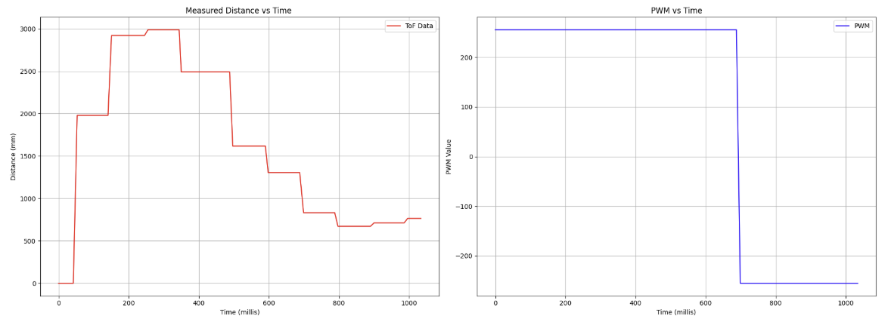

Lab 8: Stunts!
Lab Tasks
For this lab I decided to have the car do a flip.
To begin the lab, I initially tried to drive the car as fast as possible towards the wall, and actively brake the car by setting all motor driver input pins to a PWM of 255.
After much trial and error of adding on weight to the front of the car, using a higher friction surface, and hitting many walls, I was only able to get the car to flip over by adding a function to reverse the car after driving forwards.
I've added an annotated snippet of the code below, but to perform the flip, the car essentially drives forward at a specified max speed for a set duration, and then immediately drives in reverse for another set duration.
This abrupt change in momentum allows the car to flip cleanly.
I then added a function called "SET_DELAYS" which, similar to the debugging setup from Lab 5, allows me to remotely set specified delay periods to modify the open loop driving durations without having to reflash the board.
As shown in the video below, I was able to complete 3 successful runs with this open loop setup, at a starting distance of 1.5m.
I also recorded the time to complete each stunt as well as timestamped ToF data and PWM input for my best run (Attempt #1).
Collaboration Statement
I referenced Stephan Wagner's website for this lab.